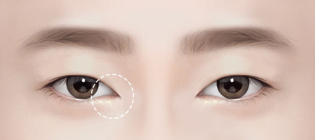
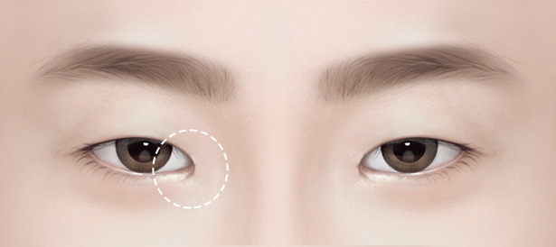
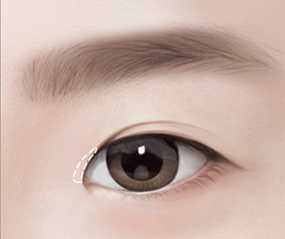
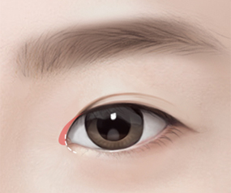
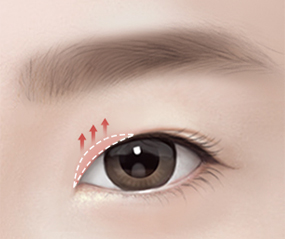
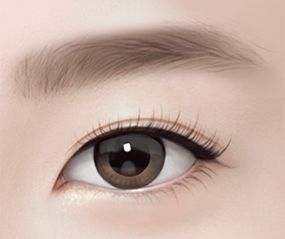

트 임 성 형
EDOM eyeline
붙지 않는 기술력으로
크고 시원한 눈매를 완성하다
1mm 숨은 공간을 찾다
몽고주름은 윗꺼풀에서 눈 앞꼬리 내안각을 덮고 있는
비스듬히 뻗어 있는 주름을 말합니다.
몽고주름은 눈 사이를 멀어 보이고 더 작게 보이게 만들어
답답한 느낌을 주며, 한껏 치켜 올라간 눈은
날카롭고 무서운 인상을 줄 수 있습니다.
트임성형을 통해 보다 부드러운 이미지로
변화하실 수 있습니다.


EDOM Solution 이담의 트임성형
-
답답한 미간, 눈매 개선
몽고주름으로 넓어 보이는 미간과
날카로워 보이는
눈매 개선이 가능합니다. -
재발 가능성 최소화
많은 눈성형 경험으로
눈썹라인을 따라 흉터가 보이지않도록
정교하게 봉합합니다. -
다시 붙지 않는 기술력
숙련된 의료진이
피부와 점막을 정교하게 재배치해주어
다시 붙지 않는 트임성형이 가능합니다.
EDOM Solution 트임성형이 필요한 경우
-

앞트임 각도가 좁아
눈매가 매서워 보이는 경우 -

앞트임 각도가 넓어
눈 사이가 넓어 보이는 경우
EDOM Solution 수술 방법
앞트임 / 윗트임
눈 앞머리를 앞과 윗 방향으로 터주어 눈매를 시원하게 만들어 줍니다. 눈이 작은 경우 앞트임만 하게 되면 날카로운 눈매가 될 수 있습니다. 이런 경우 윗트임을 함께 진행해주면 동그랗고 또렷한 눈매를 만들 수 있습니다.
- 가로 및 대각선 길이 확대
- 시원한 눈매
- 선명한 인상
-
01
눈의 구조와 조직의상태를
정밀 분석한 후 환자에게 적합한
형태를 디자인합니다. -
02
몽고주름을 절개하고
막혀있는 눈 앞머리를 확장합니다. -
03
눈썹 라인을 따라
흉터가 보이지 않도록 봉합합니다. -
04
또렷하고 탄력있는
눈매를 완성합니다.
뒤트임 / 밑트임
뒤트임수술과 밑트임 수술은 눈꼬리를 뒷 방향과 아랫방향으로 터주어 눈의 가로 길이를 늘려주는 수술방법입니다. 눈매교정, 앞트임, 뒷트임과 병행하면 아주 크고 시원한 눈을 만들 수 있습니다. 이담에서는 피부와 점막을 정교하게 재배치해주어 다시 붙지 않는 트임성형을 진행합니다.
- 눈의 가로 길이 확대
- 선한 눈매
- 부드러운 인상
-
01
눈의 구조와 골막,
눈 둘레 골격의 형태를 고려하여
환자에게 적합한 형태를 디자인합니다. -
02
외안각 및 하안검 안쪽 결막을 절개하여
눈꼬리를 내리고 눈의 가로 길이를
확장합니다. -
 03
03눈꼬리 부분을 필요한 만큼 내리고
확장한 뒤, 가로인대와 안쪽 결막에
단단하게 고정합니다. -
04
유착이 생기지 않도록 특수 봉합하여
시원한 눈을 완성합니다.
이담외과의 치료는 더 특별합니다

건강한 아름다움을 위한
안전 책임제 시행
성형수술은 단순히 외형을 바꾸는 것이 아닌 스스로에 대한 진정한 가치를 찾아가는 방법이라고 생각합니다. 내 가족을 대하는 마음으로 정직하고 섬세하게 치료하겠습니다. 아름다움에 대한 최신 트렌드를 끊임없이 연구하며 더 안전하게 건강한 아름다움을 위해 노력하겠습니다.

미용성형을 넘어
재건성형 분야까지
당뇨발(당뇨병성 족부궤양), 피부 및 연부조직의 양성종양, 안와골절 및 코뼈골절과 같은 안면외상, 예기치 못한 수부손상, 응급수술 등과 같이 미용성형을 넘어 재건성형 분야 까지 이담은 가능합니다. 최적의 치료결과를 위해 혈관외과, 정형외과, 성형외과, 내과 등 각 분야 전문의로 구성된 의료진의 협진으로 진료합니다.